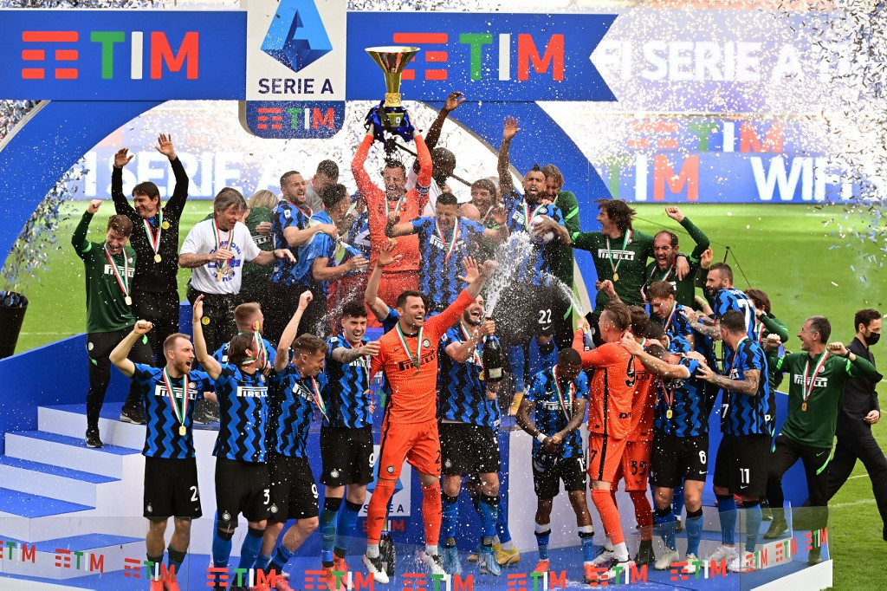
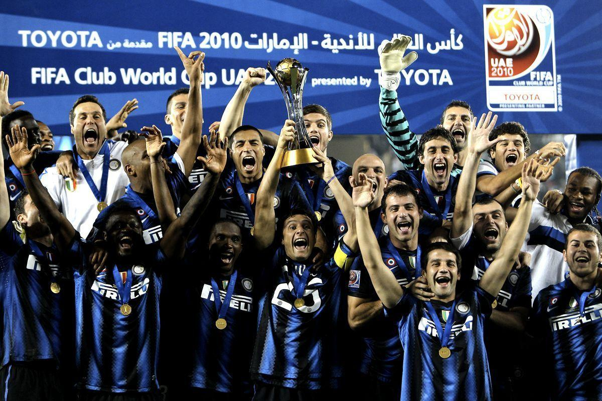

De indrukwekkende prijzenkast van Inter Milaan
Inter Milaan, opgericht in 1908, kan trots terugkijken op een geschiedenis vol triomfen en indrukwekkende prestaties. De prijzenkast van deze Italiaanse voetbalgigant is gevuld met glansrijke trofeeën en bekroningen die de club tot een van de meest succesvolle in de voetbalwereld maken.
De Serie A-trofee, het kroonjuweel van het Italiaanse clubvoetbal, heeft meerdere keren zijn thuis gevonden in de vitrines van Inter Milaan. De club heeft zich gevestigd als een dominante kracht in de nationale competitie, met talloze kampioenschappen die getuigen van de consistente prestaties op het hoogste niveau van het Italiaanse voetbal.

Echter, de Europese scene is waar Inter Milaan echt schittert. De UEFA Champions League, het meest prestigieuze clubtoernooi in Europa, heeft tweemaal de weg naar Milaan gevonden. De eerste keer was in het seizoen 1963-1964, gevolgd door een epische overwinning in 1964-1965. Deze triomfen hebben de club onsterfelijke status gegeven en een blijvende indruk achtergelaten in de geschiedenis van het Europese clubvoetbal.
Naast de nationale en Europese bekers heeft Inter ook succesvol deelgenomen aan andere internationale toernooien, zoals de UEFA Cup en de FIFA Club World Cup. Deze competities hebben bijgedragen aan de mondiale reputatie van de club en laten zien dat Inter Milaan niet alleen binnen de grenzen van Italië, maar over de hele wereld als een voetbalmacht wordt erkend.

Individuele erkenning is ook een kenmerk van de club, met spelers van Inter die regelmatig schitteren en prijzen winnen op individueel niveau. Gouden Ballen, Gouden Schoenen en talloze andere onderscheidingen zijn toegekend aan de getalenteerde spelers die het blauw-zwarte shirt van Inter hebben gedragen.
Het San Siro-stadion, dat Inter deelt met stadsgenoot AC Milan, is getuige geweest van veel van deze gedenkwaardige triomfen. De supporters, gepassioneerd en loyaal, vormen een essentieel onderdeel van het succesverhaal van Inter Milaan. Hun vocale steun heeft de club door dik en dun gesteund, waardoor elke overwinning en elk kampioenschap nog specialer wordt.
Terwijl de tijd voortschrijdt, blijft Inter Milaan vastberaden om de prijzenkast verder te vullen en nieuwe hoofdstukken toe te voegen aan het rijke voetbalverhaal van de club. Met een erfenis die schittert van glorie, blijft Inter Milaan een naam die synoniem staat voor succes in de wereld van het voetbal.